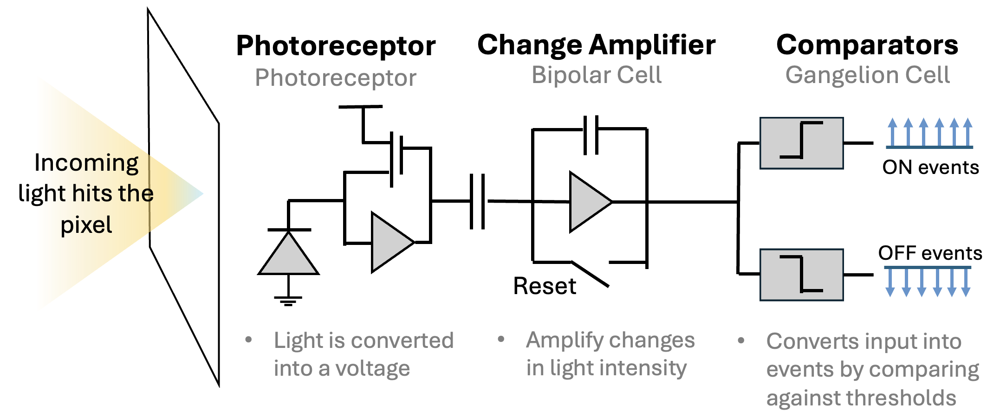
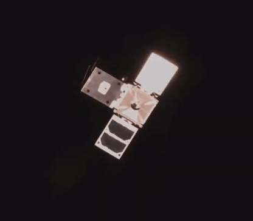
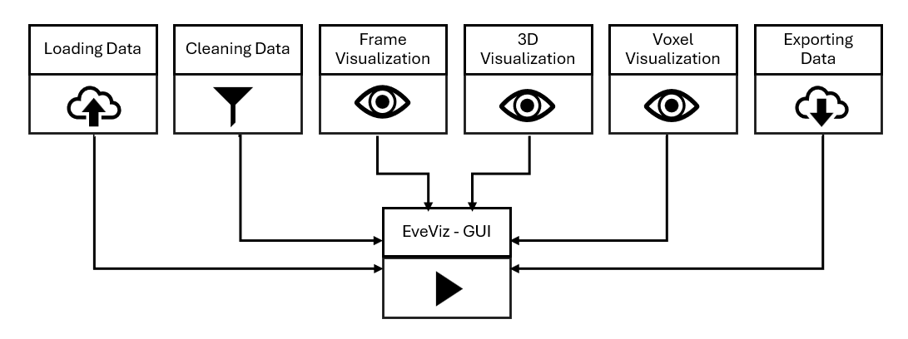
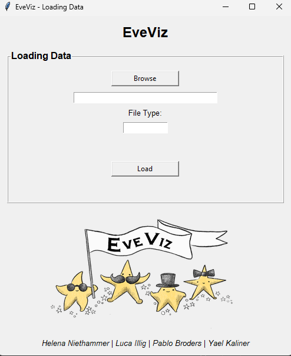
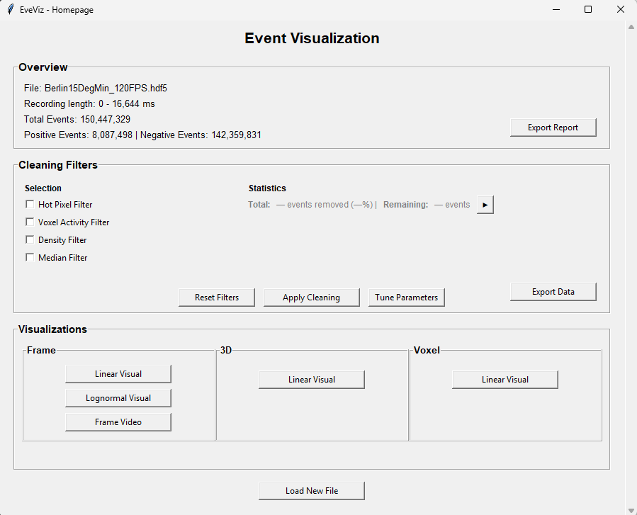
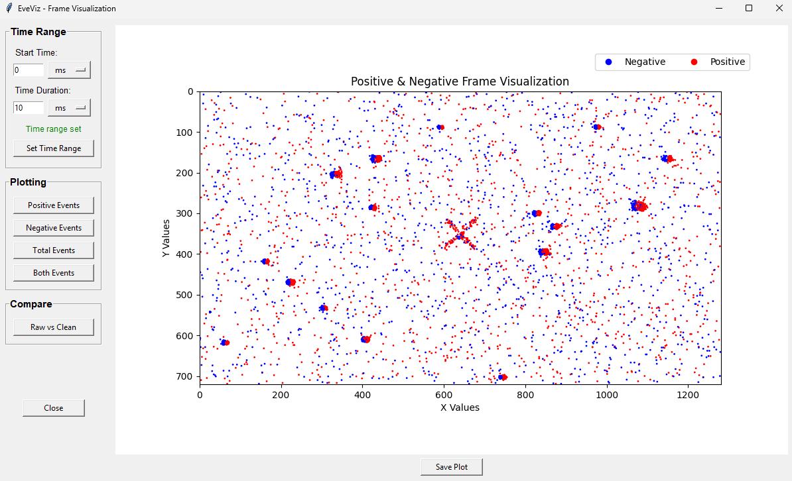
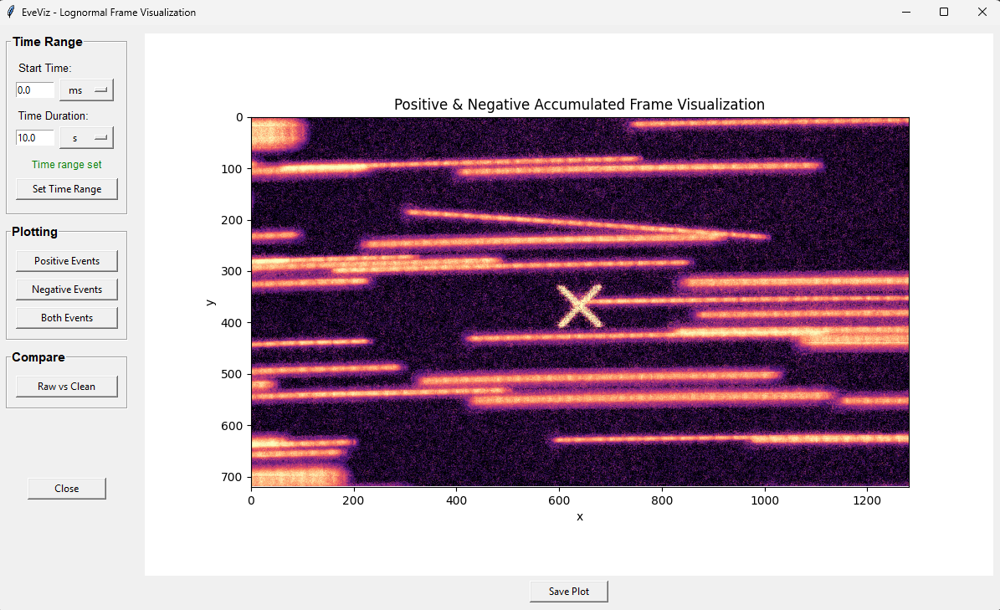
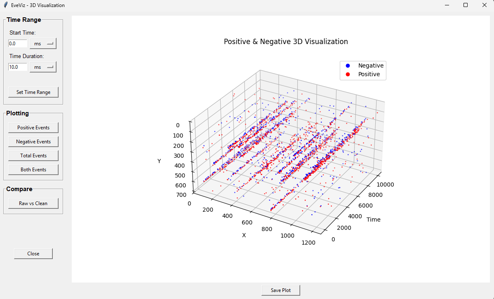

EveViz - Visualization Toolkit for Astronomical Event Data
Abstract
EveViz is a user friendly and extensible graphical user interface for loading, processing, exporting, and visualizing event camera data. This enables users to process and explore event recordings in a structured and intuitive way. The system supports multiple input formats, integrates data-cleaning methods, and provides a range of visualization approaches for both spatial and temporal analysis. As a result, EveViz improves the practical usability of event-based data and provides a flexible framework for further research and application in domains such as space-based object detection and star tracking.
What are event cameras?
Event-based vision is an alternative framework within visual sensing that pulls inspiration from the human visual system’s capability to detect and respond to motion changes in the environment. the vision system receives visual input asynchronously and transports this input to the visual cortex for processing. Cells in the retinal, composed of photoreceptors, bipolar cells, and ganglion cells, work together to detect changes in light intensity and motion. This biological system has inspired the development of event cameras, which operate on a similar principle.

Figure 1. Event cameras mimic the structure of retinal cells by using pixels that independently convert light into voltage signals, responding to changes in brightness detected at each pixel.
Events are read off a chip in the format (t,x,y,p) which includes the pixel's xy address on the pixel array, the polarity (p) of the change (ON or OFF) and a microsecond timestamp (t). Together, the thousands of pixels in an event camera represent a dynamic view of the scene. The asynchronous update of each pixel occurs at an exceptionally high temporal resolution, enabling these cameras to adeptly capture fast-moving objects and dynamic scenes without the motion blur typically associated with frame cameras. Another key benefit of this class of camera is its ability to measure light intensity differences. Similar to the human eye, the event camera detects changes on a logarithmic scale, rather than with absolute values. This allows it to handle a wide range of lighting conditions effectively, avoiding common issues like overexposure or underexposure encountered with traditional frame camera systems. This adaptability is particularly valuable in environments with challenging lighting conditions like space.

Figure 2. Side-by-side comparison of frame camera capture of a satellite detumbling (left), and an event camera capture (right).
Toolkit Features
The GUI is split into eight individual windows: Loading Data, Event Visualization, Tune Parameters, Frame Visualization, Lognormal Frame Visualization, Frame Video, 3D Visualization, and Voxel Visualization. Those windows are interconnected, as shown in Figure 3, allowing the user to navigate from window to window without restarting the tool. The Event Visualization window is the homepage of the GUI, offering several visualizations and additional features, and only terminating if a new file is loaded.

The Loading Data window (see Figure 4) is the entry point of the tool. It allows file selection, detects the file type, and converts input file formats into a unified event storage data type used across EveViz. The tool is designed to work with .raw, .hdf5, .bin, and .txt file types. .bin is a specific file type associated with an event compression algorithm, SEZ.

Figure 5 shows the next window once the file has been uploaded into the GUI. At the top, an overview of the file data is provided. This contains key information like the length of the event recording, the file name, and the number of events.
Underneath the file overview is the filtering section. By checking any of these checkmarks, its possible to post-process the data to remove elements like hot pixels, or extremely noisy data through median filters or density filters.
Finally, to visualize the file, the visualization box shows the different types of visualizations available. It is posible to view the event data in a 2D representation, a 3D representation, and as a voxel.

Figure 6 shows the 2D visualization window. Users can enter a specific time range that they are interested in seeing, and the specific events (positive, negative or both). For all visualizations, it is possible to save the associated figure generated by the GUI. Additionally, a comparison of the data before and after filtering is possible with a side-by-side plot if the 'Compare' feature is used.

Figure 7 shows the log-normal frame visualization window. This window allows users to visualize the data using a log-normal distribution, which can help in identifying patterns and anomalies that are not easily visible in the standard frame visualization. When viewing star data, this lognormal representation is much better for star detectability, as stars produce repeated events in the same pixel that will be obvious in log form, that might otherwise just look like noise in a traditional 2D accumulation.

Figure 8 shows the 3D visualization window. This window allows users to explore the event data in a three-dimensional space, providing a more comprehensive view of the spatial relationships and structures within the data and how they evolve over time.

Planned Features
EveViz was initially developed by Luca Illig, Helena Niethammer, Pablo Broders, and Yael Kaliner. Ongoing maintenance and development of the tool is carried out by Dr. Sydney Dolan.
Planned updates to EveViz are:
- Integration with star tracking estimates to provide more direct field-of-view sky estimation directly from event camera data, enabling richer astronomical analysis without requiring external preprocessing.
- A dynamic video toolbar that allows users to select a specific frame by scrubbing or clicking along a timeline, rather than being limited to entering a fixed timestamp.
BibTeX
@article{EveViz2026,
title={EveViz - Visualization Toolkit for Astronomical Event Data},
author={Yael Kaliner and Luca Illig and Pablo Broders and Helena Niethammer},
year={2026}
}